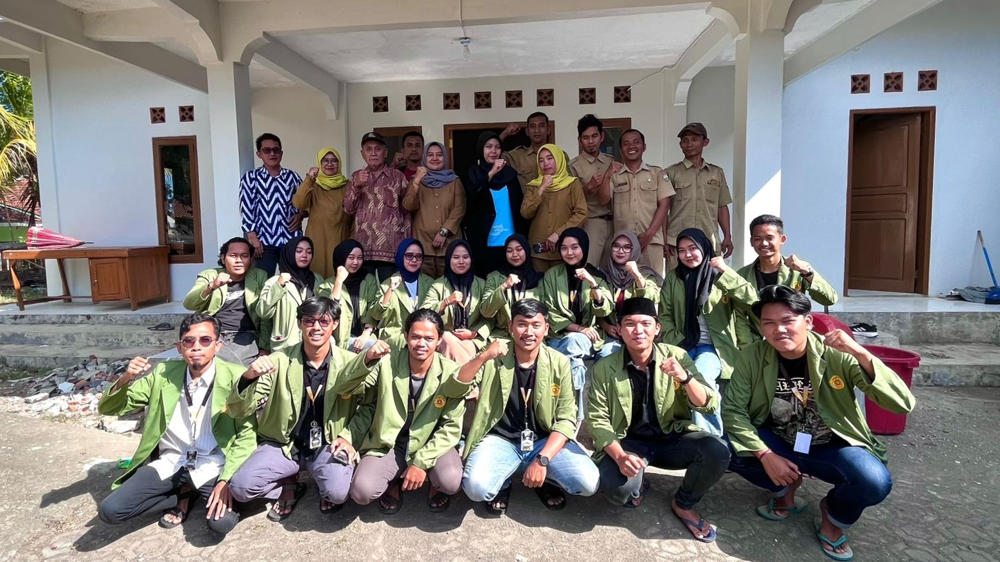
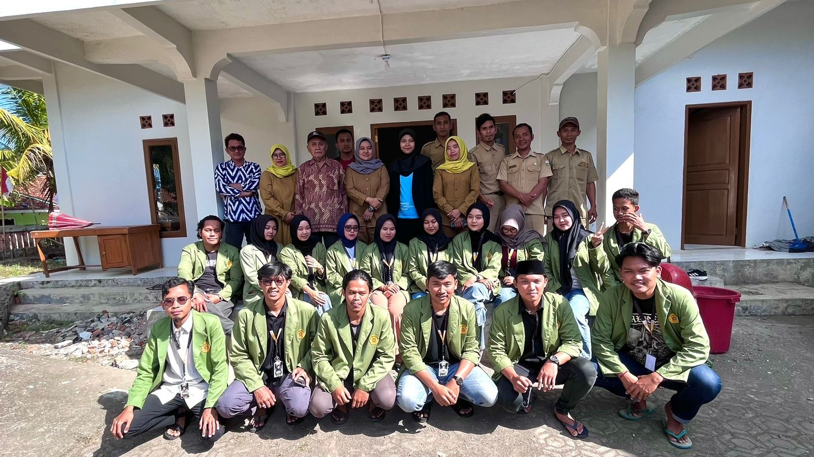
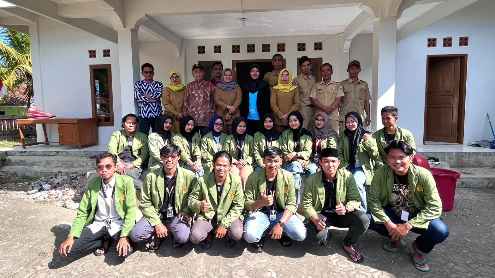

Asep Fuad Hasyim A.Md

Eva Nurmalasari, S.IP
Ernawati, S.Pd

Nenda Siti Munawaroh,S.Pd

Cecep Saepul Millah

Sarip Hidayat
Hermawan

Yusup Nurbayan , S.Pd.I

Subhanudin

Mimip Miptahudin
Yudi Darmawan
Dayat
Lasep Nuroni
Riyan

Dedi Mulyadi